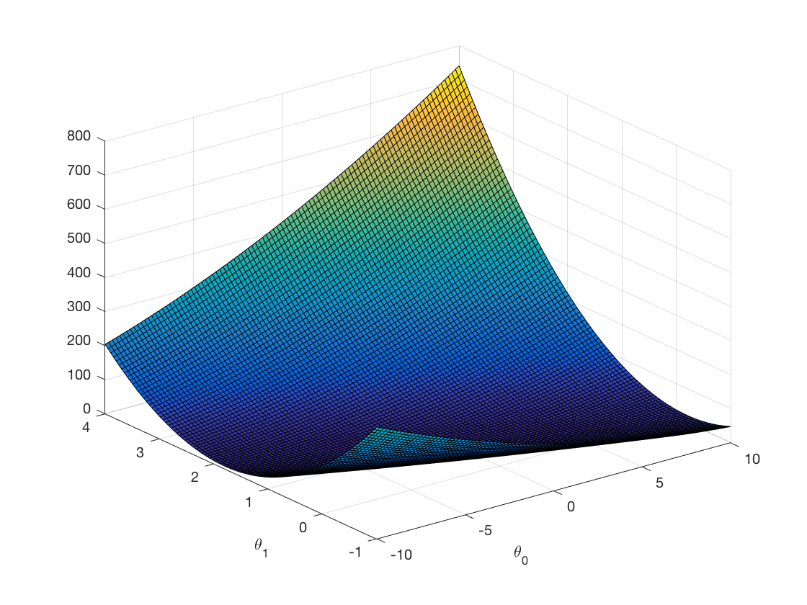
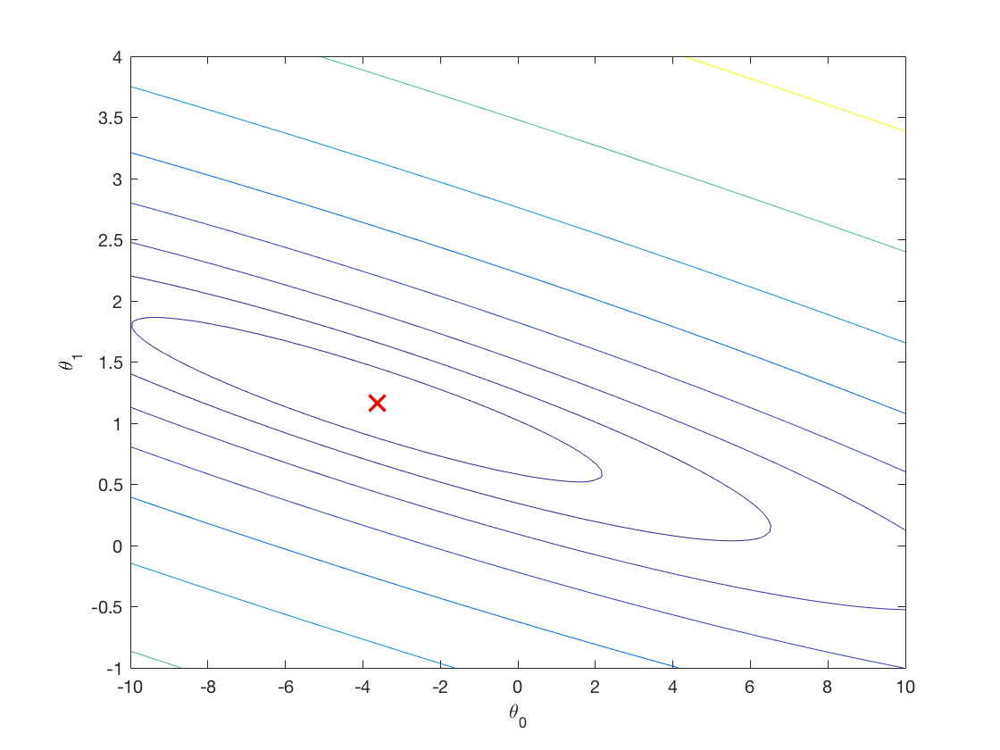

Linear Regression 线性回归
线性回归，给定一个样本集合 $D=(x_1,y_1),(x_2,y_2),\cdots,(x_m,y_m)$ 这里的$x_i,y_i$都可以是高维向量，可以找到一个线性模拟$f(x_i)=wx_i+b$，只要确定了$w$跟$b$，这个线性模型就确定了，如何评估样本$y$与你的$f(x)$之间的差别，最常用的方法是最小二乘法。
也就是说，我们用一条直线去模拟当前的样本，同时预测未来的数据，即我们给定某一个$x$值，根据模型可以返回给我们一个$y$值，这就是线性回归。
为了表示方便，我们使用如下的形式表示假设函数，为了方便 ${h_{\theta}(x)}$ 也可以记作 $h(x)$。
$$
h_\theta(x) = \theta_0 + \theta_1x
$$
现在的问题是我们如何选择$\theta_0$跟$\theta_1$ ，使得对于训练样本$(x,y)$，$h(x)$最『接近』$y$。$h(x)$与$y$越是接近，说明假设函数越是准确。这里我们选择均方误差作为衡量标准，即每个样本的估计值与实际值之间的差的平方的均值最小。
用公式表达为
$$
{\mathop{min}_{\theta_0,\theta_1}} \frac{1}{2m} \sum_{i=0}^{m} {(h_\theta(x^{(i)}) - y^{(i)})}^2
$$
$\frac{1}{2m}$是为了后续求导的计算方便，不影响最小化均方误差。
下面引入代价函数（cost function）。
Linear Regression cost function
$$
J(\theta_0,\theta_1) = \frac{1}{2m} \sum_{i=0}^{m} {(h_\theta(x^{(i)}) - y^{(i)})}^2
$$
|
|
也就是我们的优化目标，使得代价函数$J(\theta_0,\theta_1)$最小，即${\mathop{min}_{\theta_0,\theta_1}} {J(\theta_0,\theta_1) }$
对应于不同的$\theta_0$ $\theta_1$ ，函数$h_\theta(x) = \theta_0 + \theta_1x$表示不同的直线。如下图，是我们最理想的情况。

我们需要不断的尝试不同的$\theta_0$$\theta_1$直到找到一个最佳的$h_\theta(x)$。是否有特定的算法，来帮助我们自动的找到最佳的$h_\theta(x)$呢？下面我们介绍梯度下降法。
梯度下降（Gradient descent）
梯度下降法是一种优化方法，它可以帮助我们快速的找到一个函数的局部极小值点，也就是$\mathop{min}J(\theta_0,\theta_1)$。它的基本思想是：我们先随机一个初始的$\theta_0$$\theta_1$，通过不断的改变它们的值，使得$J(\theta)$变小，最终找到$J(\theta)$的最小值点。
为了更好的理解梯度下降法，我们同时设置的$\theta_0$$\theta_1$的值，再绘出$J(\theta_0,\theta_1)$的图形，因为有两个变量，因此$J(\theta_0,\theta_1)$的图形为一个曲面。如下所示，图形的最低点即为我们想要求得的$\mathop{min}J(\theta_0,\theta_1)$。

3D的图形不方便研究Gradient descent因此我们使用二维的等高线，同一等高线上的点对应的$J(\theta_0,\theta_1)$的值相同，如下图所示，越靠近二维等高线的中心，表示$J(\theta_0,\theta_1)$的值越小。

Have some function ${J(\theta_0,\theta_1) }$
want ${\mathop{min}_{\theta_0,\theta_1}} {J(\theta_0,\theta_1) } $
Outline:
- Start with some $\theta_0,\theta_1$
- keep changing $\theta_0,\theta_1$ to reduce ${J(\theta_0,\theta_1) }$ until we hopefully end up at ${\mathop{min}_{\theta_0,\theta_1}} {J(\theta_0,\theta_1) } $
下面看看算法的具体过程，如下所示，其中$\alpha$叫做学习率（learn rate）用来控制梯度下降的幅度，$ \frac{\partial}{\partial{\theta_j}} {J(\theta_0,\theta_1) }$叫做梯度（代价函数对每个$\theta$的偏导）。这里要注意的是每次必须同时的改变$\theta_0$和$\theta_1$的值。
Gradient descent algorithm
repeat until convergence {
$$
\theta_j := \theta_j - \alpha \frac{\partial}{\partial{\theta_j}} {J(\theta_0,\theta_1) }
$$
(simultaneously update $\theta_j$ for $j = 0$ and $j = 1$)
}
当$j=0$时，
$\frac{\partial}{\partial{\theta_0}} {J(\theta_0,\theta_1)} = \frac {1} {m} \sum_{i = 1} ^ {m}{(h_\theta(x^{(i)}) - y^{(i)})} $
$\theta_0 := \theta_0 - \alpha \frac {1} {m} \sum_{i = 1} ^ {m}{(h_\theta(x^{(i)}) - y^{(i)})} $
当$j=1$时，
$\frac{\partial}{\partial{\theta_1}} {J(\theta_0,\theta_1)} = \frac {1} {m} \sum_{i = 1} ^ {m}{(h_\theta(x^{(i)}) - y^{(i)})} x^{(i)} $
$\theta_1 := \theta_1 - \alpha \frac {1} {m} \sum_{i = 1} ^ {m}{(h_\theta(x^{(i)}) - y^{(i)})} x^{(i)} $
|
|
学习率$\alpha$会影响梯度下降的幅度，如果$\alpha$太小，$\theta$的每次变化幅度会很小，梯度下降的速度就会很慢，如果$\alpha$过大，则$\theta$每次的变化幅度就会很大，有可能使得$J(\theta)$越过最低点，永远无法收敛到最小值。随着$J(\theta)$越来越接近最低点，对应的梯度值$ \frac{\partial}{\partial{\theta_j}} {J(\theta_0,\theta_1) }$也会越来越小，每次下降的程度也会越来越慢，因此我们并不需要刻意的去减少$\alpha$的值。
事实上，由于线性回归的代价函数总是一个凸函数（Convex Function）这样的函数没有局部最优解，只有一个全局最优解，因此我们在使用梯度下降的时候，总会找到一个全局的最优解。
Linear Regression with Mulitiple Variables
在实际问题中，输入的数据会有很多的特征值，而不仅仅只有一个。这里我们约定，用$n$来表示特征的数量，$m$表示训练样本的数量。$x^{(i)}$表示第$i$个训练样本，$x^{(i)}_j$表示第$i$个训练样本的第$j$个特征值。
单元线性回归中的假设函数为
$$
h_\theta(x) = \theta_0 + \theta_1x
$$
同理类比得，在多元线性回归中的假设函数为
$$
h_\theta(x) = \theta_0 + \theta_1 x_1+ \theta_2 x_2+ \cdots+\theta_n x_n
$$
$$
h_\theta(x) = \theta_0 x_0 + \theta_1 x_1 + \theta_2 x_2 +\cdots+ \theta_n x_n = \theta^T x
$$
cost function
多元线性回归的代价函数跟一元线性回归的代价函数相同。只是$x$由Scale Value变为了Vector Value。
$$
J(\theta) = \frac{1}{2m} \sum_{i=0}^{m} {(h_\theta(x^{(i)}) - y^{(i)})}^2
$$
梯度下降（Gradient descent）
repeat until convergence {
$$
\theta_j := \theta_j - \alpha \frac{\partial}{\partial{\theta_j}} {J(\theta) }
$$
(simultaneously update $\theta_j$ for $j = 0 ,\cdots ,n$ )
}
$$
\frac{\partial}{\partial{\theta_j}} {J(\theta)} = \frac {1} {m} \sum_{i = 1} ^ {m}{(h_\theta(x^{(i)}) - y^{(i)})} x^{(i)}_j
$$
$$
\theta_0 := \theta_0 - \alpha \frac {1} {m} \sum_{i = 1} ^ {m}{(h_\theta(x^{(i)}) - y^{(i)})} x^{(i)}_0
$$
$$
\theta_1 := \theta_1 - \alpha \frac {1} {m} \sum_{i = 1} ^ {m}{(h_\theta(x^{(i)}) - y^{(i)})} x^{(i)}_1
$$
$$
\theta_2 := \theta_2 - \alpha \frac {1} {m} \sum_{i = 1} ^ {m}{(h_\theta(x^{(i)}) - y^{(i)})} x^{(i)}_2
$$
($x^{(i)}_0$ =1)
特征放缩
对于多元线性回归，如果每个特征值的相差范围很大，梯度下降的速度会很慢，这时候就需要对特征值数据做缩放处理（Feature Scaling），从而将所有特征的数据数量级都放缩在一个很小的范围内，以加快梯度下降的速度。
常用的特征处理的方法就是均值归一化（Mean Normalization）
$$
x_i = \frac{x_i - \mu_i}{\max-\min}
$$
或者
$$
x_i = \frac{x_i - \mu_i}{\sigma_i}
$$
正规方程
当我们使用梯度下降法去求未知参数$\theta$的最优值时，需要通过很多次的迭代才能得到全局最优解，有的时候梯度下降的速度会很慢。有没有其他更好的方法呢？假设代价函数$J(\theta) = a\theta^2+b\theta+c$，$\theta$是一个实数，求$\theta$的最优解，只需要令它的导数为零。
事实上的$\theta$是一个$n+1$维向量，需要我们对每个$\theta_i$求偏导，令偏导为零，就可以求出每个$\theta_i$的值。
首先, 在数据集前加上一列$x_0$, 值都为1；然后将所有的变量都放入矩阵$X$中(包括加上的$x_0$)；再将输出值放入向量$y$中，最后通过公式$\theta = (X^TX)^{-1}X^Ty$, 就可以算出$\theta$的值。这个公式就叫做正规方程，正规方程不需要进行特征放缩。
对于正规方程中$X^TX$不可逆的情况，可能是我们使用了冗余的特征，特征的数量超过了样本的数量，我们可以通过删掉一些不必要的特征或者使用正则化来解决。
|
|
Gradient Descent VS Normal Equation
| Gradient Descent | Normal Equation |
|---|---|
| Need to choose $\alpha$. | No need to choose $\alpha$. |
| Need many iterations. | No need to iterate. |
| Works well even when n is large. | need to compute $(X^TX)^{-1}$,slow if n is very large. |
参考文献
- 《机器学习》周志华老师著
- 《统计学习方法》李航老师著
- Couresera Machine Learning Andrew-Ng
- Machine-Learning-Andrew-Ng-My-Notes